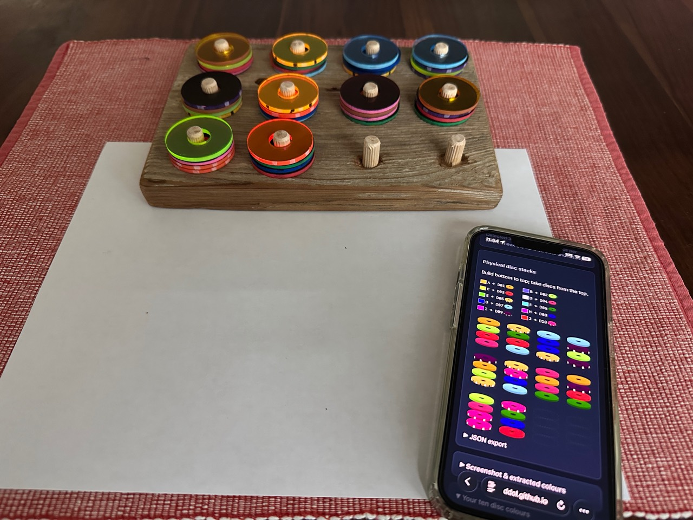
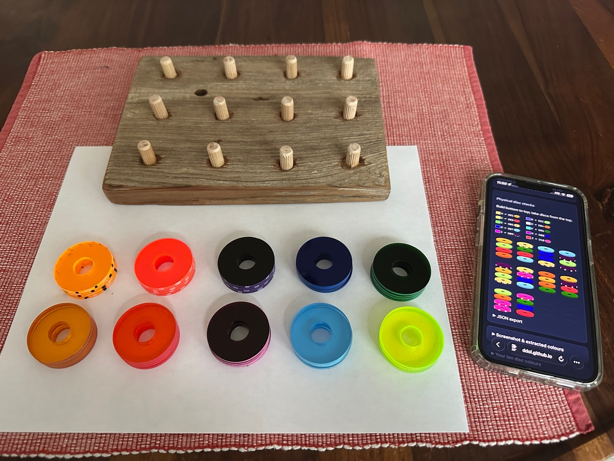

Behind the mapper
A screen-free puzzle for my kids
My young kids like Color Puzzle. I wanted a way for them to enjoy the puzzle away from a screen, so I made a physical version with coloured discs and a wooden peg board.

From a screenshot to the table
I start with a puzzle screenshot from r/ColorPuzzleGame and load it into the mapper. It gives each screenshot colour its own physical disc colour, so the two sets of colours don’t have to match.
The mapper also reverses each stack. The digital puzzle empties from the bottom; on the board, we take discs from the top. I follow the output to build the stacks on the pegs, then put the phone away.

The same puzzle, with real pieces
The screen helps me prepare the puzzle. After that, my kids can pick up and move the discs themselves. That was the reason for making this: a way to bring a puzzle they already like to the table and let them play without a screen.